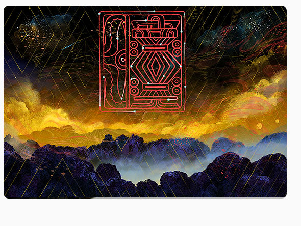

Arqueoastronomía Maya
Película Full Dome
Desarrollamos la primera película para domo completamente animada hecha en México, financiada por la Convocatoria de Apoyo a Proyectos de Comunicación Pública de la CTI 2016 del Consejo Nacional de Ciencia y Tecnología (CONACYT)
Este proyecto se realiza en conjunto con el European Southern Observatory (ESO) y narra la interrelación de los grandes conocimientos astronómicos con las edificaciones mayas de diferentes sitios arqueológicos del sureste de México.

